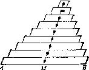

每一边界元素恰与另一边界元素平行，而与其余的边界元素垂直。
这样，我们就将所比较的两个系统的对象(即长方形的边与长方体的面)的
某些共同关系表达出来了。这两个系统的类比存在于关系的共性之中。
(2)在我们的思维、日常谈话、一般结论以及艺术表演方法和最高科学成
就中无不充满了类比。类比可在不同的水平使用。人们常常使用含糊不清的，
夸大的，不完全的或没有完全弄清楚的类比，但类比也可以达到数学精确性的
水平。所有各种类比在发现解答方面都可能起作用，所以我们不应当忽略任何
一种。
(3) 在求解一个问题时，如果能成功地发现一个此较简单的类比问题，我们
会认为自己运气不错。在第十五节，我们原来的问题是长方体的对角线，它的
较简单的类比问题就是长方形的对角线，这个类比问题引导我们到达原问题的
解答。我们将讨论这种类型的另一个例子。我们需要求解下列问题：
求均匀四面体的重心。
若不具备积分与物理知识，这问题是很困难的。在阿基米德与伽里略的时
代，它是一个严肃的科学问题。因此，如果我们希望用尽可能少的预备知识来
解决它，我们就应该寻求一个较为简单的类比问题。在平面上的对应问题很自
然地就是下面的问题：
求一均匀三角形的重心。
现在，我们有了两个问题而不是一个问题。但两个问题比起一个问题来可
能还更容易回答——假定这两个问题能巧妙地联系起来的话。
(4)现在我们暂时把原来四面体的问题放在一边，而把注意力集中在有关
三角形这一比较简单的类比问题上。为了求解这个问题，我们必须了解一些关
于重心的知识。下列原理似乎是可信的而且提出它来也很自然：
若一物质系统S由几部分组成，每一部分的重心都位于同一平面上，则该
平面也必包含此整个系统S的重心。
对于三角形情况来说，这一原理给出我们所需要的一切。首先，它指出三
角形的重心位于三角形的平面上。于是，我们可以把三角形看成由平行于三角
形某边(图7中边 AB) 的许多个小条条(薄条条无限窄的平行四边形)所组成。每一
个小条条(平行四边形)的重心显然是它的中心，而所有这些中心位于连线 CM 上，
C 为与 AB 边相对的顶点， M 为 AB 的中点(见图7)。